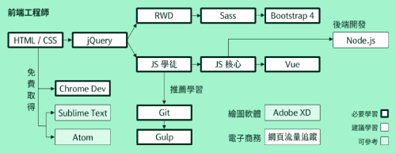

六角學院線上研討會2021年前端工程求職等級表

六角學院這門線上講座開的很是時候，因為年初了大家都開始在安排本年度的學習進度規劃、職涯方向、求職方法等，前陣子也才剛跟洧杰老師諮詢過自己的未來方向與學習目標，但想必有很多同學跟我有一樣的困擾，老師才會特地開一門講座讓大家了解吧！
最近也發現人力銀行很多公司開出很多前端職缺，AI大前端時代一直都在進步，每種職缺要求的技能技術不盡相同，自己目前都只符合切版這種職缺，但也不敢說自己很會切版，目前知道自己未來會站在一個分水嶺，要專精的前往前端設計師還是前端工程師，這也端看我自己未來幾個月的學習進度，航道已開啟，準備衝刺了！
這是本週最期待的一堂課
主題：2021 年 前端工程求職等級表 主講：六角校長 廖洧杰
符合以下背景，歡迎參考這份線上筆記：
- 正在學程式，想瞭解距離初級前端工程師的求職門檻
- 已經工作 1~3 年，想知道下一步還能如何讓自己更好
- 對自己未來有些迷惘，想請教之後的方向
可以先參考 大家提問的問題 來釐清未來自己的學習方向、職涯規劃！有些老師已經回覆在slido上面了，所以，以下筆記就不重複，以當天直播線上回覆為主囉！
線上講座重點筆記：
如果新手都達到校長所說的 就業門檻，那薪水大概可以提多少比較合適呢？
- 這裡以社會新鮮人為例
- 如果有達第九關，並有用 JS+Vue 做出作品的話
- 北部起薪介於 3w~4w 之間
- 工程師4w~4w5(有工作經驗的有機會有這種薪水)
- 非北部起薪為 2w7~3w5 之間
- 工程師較有機會可以突破天花板（管理職）
詳細可看這篇 薪資文，今年仍有維持
求職前一定要先參考這份 2021年 前端工程師求職等級表，並且讓六角履歷健檢
讓六角學院履歷健檢，規劃後續的媒和流程
學JS很挫折怎麼辦 ?
JS程式邏輯語言，語法都會但不知道怎麼下手，先拆解任務、拆解問題，由大東西拆解成小東西，提升運算思維 洧杰老師推薦運算思維書籍 寫給所有人的運算思維入門 另外，我自己去查到六角學院社團裡 這篇文章可以參考
UIUX 作品怎麼準備 ?
- UIUX 最好做一條龍的作品，最後直接切版
- user story > wireframe > Prototype ( 課程最後要給俊儀老師批改 )
- 最好用1.5~2個月製作作品
- CSS、JS、RWD、BS4、XD/Figma
- side project / redesign
如何判斷這間公司適不適合新人進去磨練？
可以提問面試官
- 請問公司為什麼有這個職缺
- 預期會跟哪些後端配合或部門配合
- 預期有哪些專案
- 對前端工程師短中長期有什麼期待
- 最後可以說明自己希望可以成為 貴公司#$%^^^ 然後會去做好職涯規劃
工程師市場已經飽和了 ?
- 工程師領域沒有飽和的問題
- 永遠缺有戰力的人，不缺沒戰力的人
- 培養自己為有戰力的人
前端工程師作品及怎麼準備 ?
作品重質不重量 屬性不要一樣 ex圖表 地圖 電商 資料庫
前端設計師必備技能 ?
前端設計師 要git + js + UI
博弈工作介紹 - 為您解惑十萬個為什麼 ?
其他問題
等級二學員協助切版 商業思維學院 後台 SPA 前後端分離 成長曲線 - 草創期 成長期 高峰期 低峰期 至少要有兩年經驗再來談接案 要找到能讓自己進步的資源 緯創 鴻海 日月光 Ｑnap 鈦坦 談薪水 目前薪資＋30%~50% 遠端開始普及，但是遠端是給有工作經驗的人 建議不要先去新創博弈，要先查求職天眼通，面試趣
洧杰校長綜合建議：
可以想想若沒這機會，你還可以幹嘛 ？ 嘗試這機會你給自己多少時間 ? 想要就業，六角學院的課程預估要8.5個月 人生就是在做選擇跟取捨 哪裡有舞台就去哪裡，不要侷限地區 面試就是在展現經驗累積的成果 態度好 > 能力好 培養自己為有實戰能力的人 業界吃一個套路，一個完美的故事（把履歷包裝成故事）
結語
今天這場研討會洧杰校長根本撿到槍 ( 已笑翻 )，但收穫滿滿，聽完可以獲得業界許多就職資訊，對今年想要求職的人很有幫助，推薦六角的學員記得要收看！希望今年可以先專注在前端開發學習上，所以目前心中首選的 Mentor 先選定六角學院洧杰老師與卡斯伯老師、六角其他老師&助教群們！
Roadmap to becoming a Front-end developer in 2021

想成為前端工程師可以照著 六角學院 Roadmap 繼續走下去！不會迷失方向的！ 另外，我在github找到一個國外的 Front-end developer roadmap 也很有參考價值！
{kind=link}
希望今年接下來的目標完成率都可以像切版直播班一樣好！